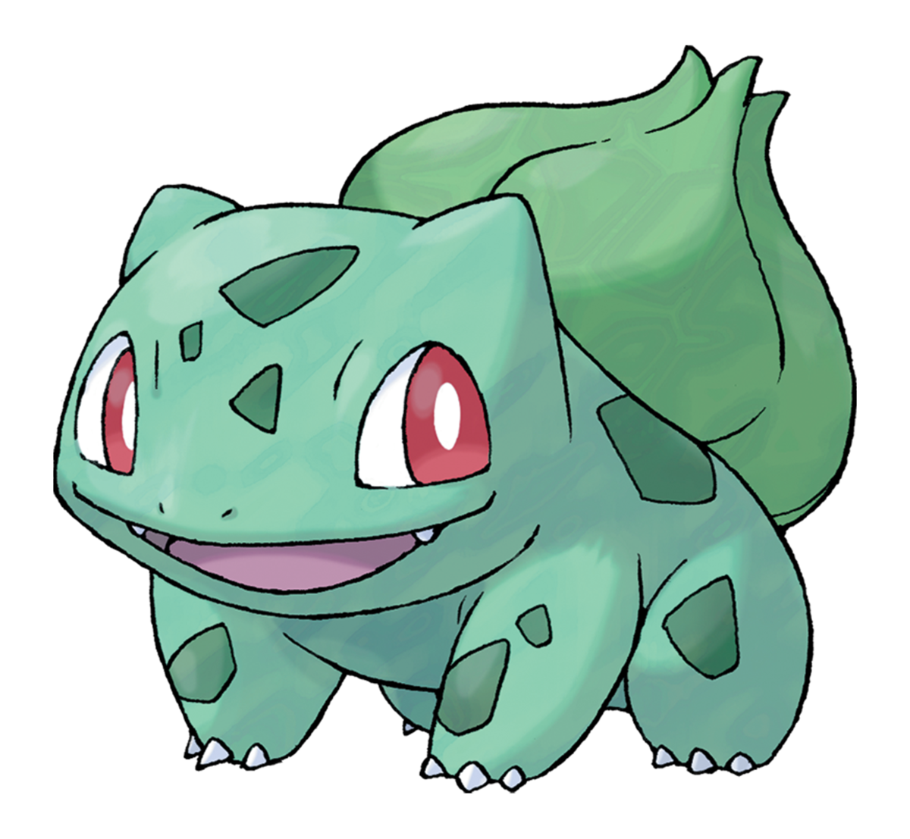

N.º 001
PLANTA

Bulbasaur
El compañero de tipo Planta
Un Pokémon tranquilo y resistente que lleva una semilla en su espalda. Con el tiempo, esa semilla crece y se convierte en una gran flor.
ResistenciaEstrategiaPlanta / Veneno
¿Por qué elegirlo?
Es una gran opción si prefieres comenzar con ventaja frente a los primeros desafíos de Kanto. Sus movimientos de planta ayudan a controlar los combates y ofrece un inicio equilibrado.